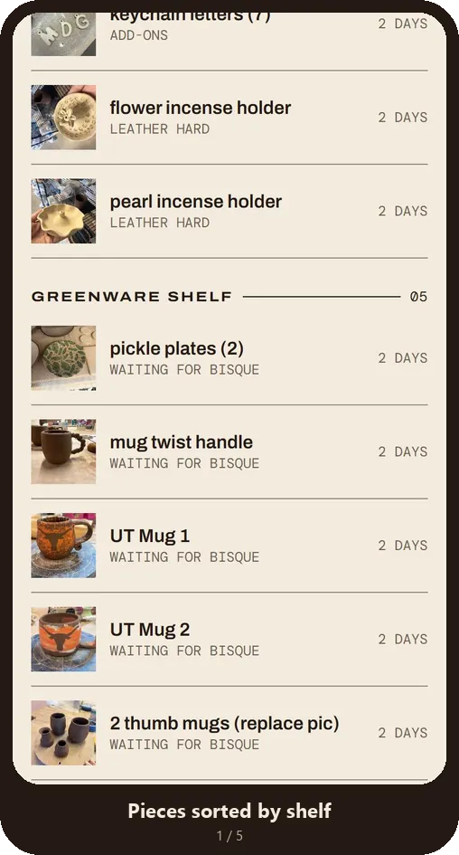
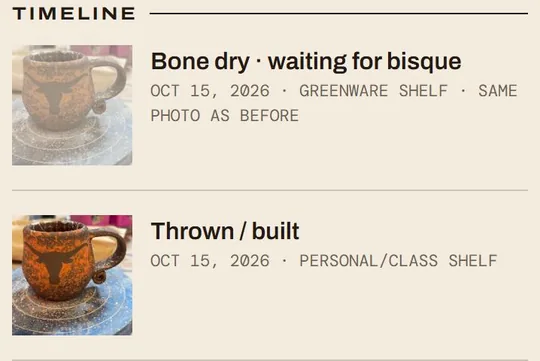
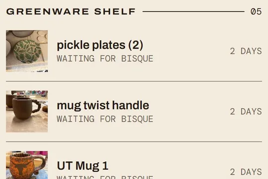
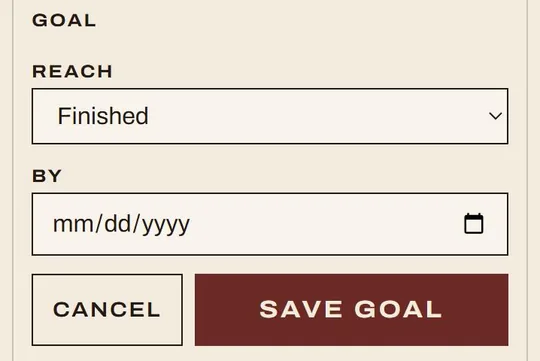
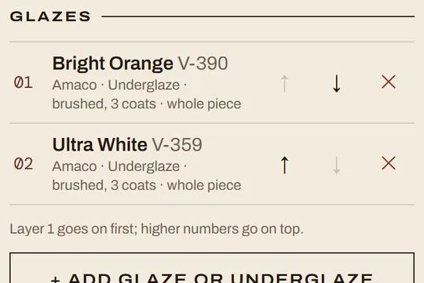
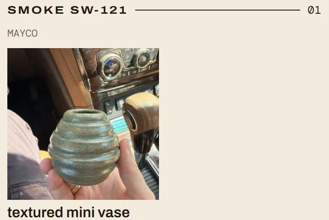
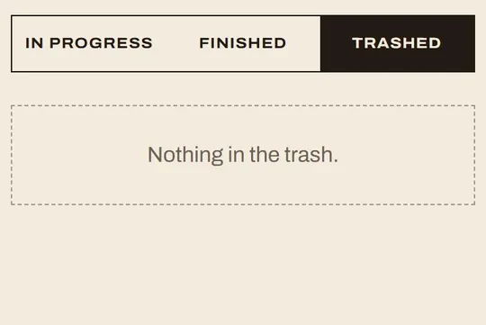

Case study
Pottery tracker
I made a phone app for my pottery practice, and I use it every time I'm at the studio. It follows each piece from wet clay to the final firing: what stage it's in, which shelf it's on, what glazes went on, and how they came out.
What it does


Stage timeline
Tracks when a piece was made, with a photo, shelf, and note at each stage.

Shelves
Home groups pieces by shelf, longest-waiting first.

Goals and tracking
Set a target date. Anything due within a week rises to the top.

Glaze layers
Each layer in order: dipped or brushed, coats, and where it went.

Search by glaze
Find every finished piece with a glaze, filtered by white or red clay.

Trash and delete
Failed pieces go to the trash with what went wrong, and can be deleted for good.
Product decisions
I was the product manager and designer. Claude Code wrote the code, and I tested every change on my phone.
- Google sign-in, invite only
- Only emails on my invite list get in and are authenticated through Google. It's the right balance of control for what I was looking for.
- Anonymous sharing
- You can choose to share your finished piece so everyone can see your glaze results, but without sharing other information.
- Privacy checks
- Nine automatic checks try to open someone else's piece before every update. If one gets through, the update is blocked.
- A real glaze catalog
- 575 glazes from my local clay store, searchable by name or code, so names stay consistent.
- Photos and hosting
- My first time hosting on Vercel. Photos stay private, and the phone shrinks them and strips location first.
- Home screen app
- No review process and instant updates. Reminders live in a Due soon list instead of notifications.
- Faster after launch
- Lists load small photo copies, about 7x lighter, and the glaze list only loads when I need it.
- Mid-century look
- Pulled from my Pinterest board: oxblood, paper, and ink, with pottery silhouettes when a piece has no photo.
What I learned
Tap a pot to open each lesson.Swipe for more pots, then tap one →
Iterate as much as you can
The first version of almost every screen changed once I used it at the studio.
- The stage dropdown became a row of stops you tap.
- The back button got bigger and stays at the top while you scroll.
- Instead of typing glaze names, I wanted a catalog to pick from, so I added 575 glazes from my local clay store.
Test a lot
- I tested on my phone after every phase.
- Every privacy rule gets checked before every update.
Think about more than just me
I'm not the only person who will use this. Putting myself in other people's shoes shaped a lot of the privacy decisions.
- Friends might not want their name on a shared glaze photo.
- Someone new needs a clear message if they aren't on the invite list yet.
What's next
I want to see how my friends actually use sharing, and whether they'd rather know who a result came from.
I'm also excited to see my pottery skills grow. I love to create! 😊